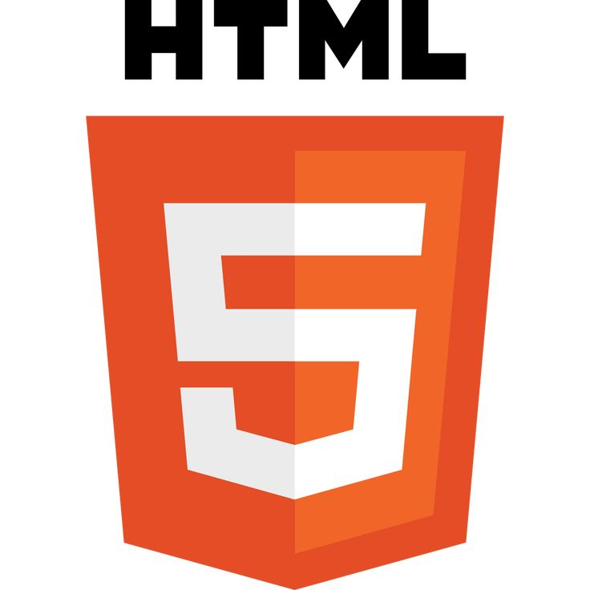

SKILL

HTML5

CSS3

"Halo! Saya Faisol, seorang pembuat web dan desainer antarmuka pengguna yang mencintai keindahan dalam setiap detail. Dengan kombinasi antara coding dan kreativitas, saya membantu merealisasikan ide menjadi pengalaman digital yang hidup. Saya percaya bahwa setiap proyek adalah peluang untuk menciptakan sesuatu yang bermakna. Mari kita wujudkan karya luar biasa bersama!"
Lihat Project
Project ini adalah program Python sederhana untuk mengelola data mahasiswa dan mata kuliah.
Ini adalah tampilan Curriculum Vitae (CV) atau resume digital yang menampilkan informasi pribadi, profil singkat, pengalaman kerja sebagai teknisi jaringan, serta keahlian dalam Python, HTML, dan jaringan.